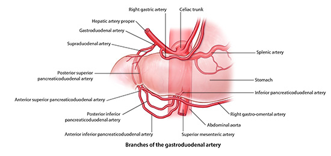

GAS1 Lab 6: Stomach, Liver, Spleen
OBJECTIVES:GAS1.6.1 Trace the flow of blood from the paired and unpaired arterial vessels to the stomach, liver and spleen and indicate possible collateral vascular pathways. |
READINGS:Moore (Eighth Edition): Clinically Oriented Anatomy Pages: 451-460, 476-480, 487-514. |
Stomach, Liver, Spleen: Module 1 - Page 1 of 5
Let's discuss the arterial supply of the stomach, liver and spleen.
We will start with the celiac trunk, which is the artery that supplies the foregut.
| Add the celiac trunk. | |
| Next, add the splenic artery. | |
| Add the left gastric artery. | |
| Add the common hepatic artery. |
These are the three major branches of the celiac trunk.
| Rotate the cadaver so you get a sense of the relationships of these arteries. | |
| Next, add the spleen. |